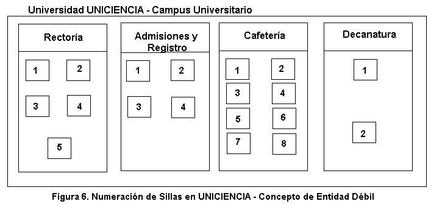

Entidad Débil
El concepto de entidad débil es una situación que no se presenta con frecuencia en los problemas de la vida real, pero que es importante conocerlo para poder afrontarlo en el caso que se necesite.
En apartados anteriores dijimos que las entidades tienen uno o más atributos claves, es decir, atributos que identifican cada instancia de la entidad. Pero algunas veces, se presenta la situación en la cual existen entidades que no alcanzan a formar su clave a través de atributos propios. En estos casos, este tipo de entidad debe armar su propia clave a través del atributo clave de otra entidad con la cual está relacionada junto con uno o más atributos propios. A este tipo de entidad se le conoce como entidad débil. Obviamente, la entidad que “presta” su clave a la entidad débil, se conoce como entidad fuerte.
Una entidad débil es aquella que no posee clave a través de sus atributos propios, sino que se tiene que valer de la clave de otra entidad con la cual está relacionada para poder, junto a uno o más atributos propios, armar su propia clave.
Toda entidad débil debe tener uno o más discriminantes. Estos son los atributos propios de la entidad débil que, junto con la clave de la entidad fuerte, conforman su clave.
El discriminante es el conjunto de atributos de la entidad débil que conforman parte de su clave.
Ejemplo.
En la universidad UNICIENCIA se tiene un sistema de activos fijos. Dentro de este sistema, se lleva el registro de las sillas que hay en cada una de las oficinas. Es política de la universidad codificar, a través de numeración, las sillas de cada oficina. Por ejemplo, si en la oficina de Rectoría hay 5 sillas, estarán numeradas del 1 al 5. Y si en la oficina de Admisiones y Registro existen 4 sillas, estarán numeradas del 1 al 4. El ejemplo se ilustra en la Figura 6.

Fuente Propia.
Como se puede analizar del caso propuesto, se tienen 2 entidades: OFICINA Y SILLA, relacionadas de la siguiente forma:
OFICINA ============ Posee =============SILLA
Si entramos a analizar los atributos claves de cada entidad, encontramos que la clave de la entidad OFICINA podría ser “número”. Pero si hacemos lo mismo con la entidad SILLA, descubrimos que el número de la silla no es suficiente como clave de la entidad.
Esto debido a que existen varias sillas con el mismo número, lo cual contradice la definición de atributo clave dada en apartados anteriores. Para poder identificar una silla en particular, debemos asociarla a la oficina a la que pertenece. Así, si se hace alusión a la silla No. 3, tendremos inconvenientes en saber si se trata de la silla de Rectoría, de Admisiones y Registro o de Cafetería. En cambio, si se menciona la silla No. 3 de Cafetería, no habrá lugar a ambigüedades.
En este caso particular, la entidad SILLA es una entidad débil y la entidad fuerte será OFICINA. Nótese que SILLA no tiene clave propia y, por lo tanto, debe valerse del número de la oficina (atributo clave de la entidad fuerte) para formar, junto con el número de la silla, su propia clave.
En el ejemplo anterior, cual es el discriminante?
Videos: